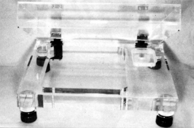
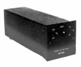
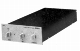
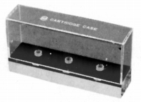
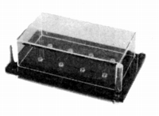

AOKI(アオキ）
1970年代後半にヘッドアンプなどアナログディスク関連製品を販売していた青木技研開発�鰍ﾌブランド。詳細は不明。

（手元に資料がある範囲では、他にアクリル製のプレイヤーベースなどを作っていたようだ。TPC-1A、72,000円)
�T.ヘッドアンプ
最高級機SFH-100を除くモデルは、電池式であった。


(SFH-11)
�U.その他
カートリッジ・キーパーがあったようだ。
 
（左 CC-1 3,900円 カートリッジを3本収納。 右 CC-8 6,500円 カートリッジを8本収納。)